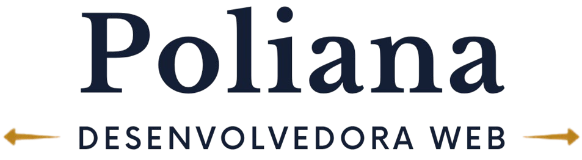

Estudante da FATEC Zona Sul
Cursando o 3° semestre do curso de DSM

Cursando o 3° semestre do curso de DSM
Desenvolvo pequenos projetos durante o curso, cada semestre temos um projeto novo para ser desenvolvido em grupo com aplicação WEB, NODE.js, SQL Server e GitHub, além das ferramentas como DR Fork, Mockaroo e Power BI para avaliação de conhecimento em sala, todos os projetos são utilizando empresas reais, alguns podem conter dados reais.
No projeto realizamos o site de uma empresa real para colocar em pratica o aprendizado de HTML e CSS, utilizamos site com botões para alternar entre paginas e dados.
No projeto treinamos o uso da linguagem PHP, explorando a utilização fora e dentro do HTML, assim como o JS.
No projeto estamos desenvolvendo um site para controle de agenda e clientes/contratos, no sistema desenvolvido é possivel armazer dados dos clientes, ter controle financeiro, armazenar documentos e gerenciar alertas do calendário sobre audiencias e afins.